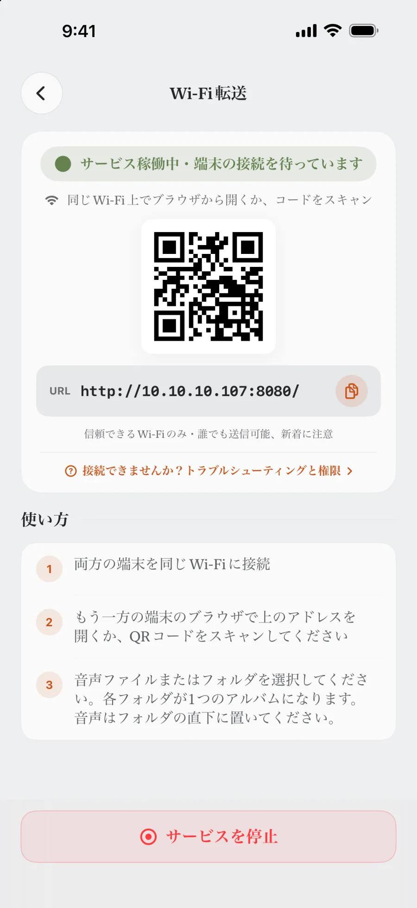

EarMemo › LEC・TAC の講義音声
LEC・TAC の講義音声を iPhone でオフライン・倍速で聴く
LEC は受講システム（Online Study SP / Study Flow）の「音声ダウンロード」欄、TAC は対応コースの講義音声ダウンロードから音声ファイルを保存できます。iPhone の「ファイル」に入れて EarMemo などのオフラインプレーヤーに読み込めば、通信なしで 0.5〜3.5 倍速で聴け、止めた秒から再開できます。
スクール側の再生画面にも速度変更はありますが、上限は 2 倍です（LEC の Web 通信はスマートフォンで 0.6〜2.0 倍、TAC は 0.8〜2 倍と案内）。復習で 2 倍より速く流したい、電車の中で電波を気にせず聴きたい、という場合は音声ファイルを手元に置くのが確実です。
音声ファイルをダウンロードする
LEC
- Study Flow：パソコン・スマートフォン共通で、講座ページの「音声ダウンロード」欄から希望するファイルを選ぶとダウンロードされます。
- Online Study SP：パソコンでは「音声ダウンロード」欄からファイルを選んで保存します。スマートフォンでは手順が異なるため、LEC の「スマートフォンでのダウンロード方法」ページに従ってください。
- ダウンロードやダウンロードしたデータに関する問い合わせ期限は、申し込んだ講座の視聴・配信期限までです。
TAC
- 講義音声ダウンロードは「講義音声ダウンロードが可能なコースのみ」の機能で、音声データをパソコンやスマートフォンにダウンロードできます。
- 受講ページ（TAC WEB SCHOOL）にログインし、受講中のコースで音声ファイルをダウンロードします。
iPhone の Safari で保存したファイルは「ファイル」→「ダウンロード」に入ります。タップしても再生されるだけの場合は、リンクを長押しして「リンク先のファイルをダウンロード」を選びます。
動画はこの方法では使えません
- LEC のスマホ向け講義動画は「VODBOX+」アプリ専用で、ほかの端末やアプリには移せません。
- TAC の講義動画ダウンロードは「TAC WEB SCHOOL」アプリ専用で、有効期間はダウンロードから 2 週間です。
- どちらもスクールのアプリの中で再生するもので、EarMemo には読み込めません。対象は音声ファイルだけです。
EarMemo に読み込む
- 「ファイル」から：EarMemo で ⋯ →「音声／動画を読み込む」をタップし、「ダウンロード」から音声を選びます（複数選択可）。科目ごとにフォルダにまとめてあるなら「フォルダを読み込む」で、フォルダがそのままアルバムになります。
- パソコンから Wi-Fi で：パソコンにダウンロードした場合は、EarMemo の ⋯ →「Wi-Fi転送」で表示されるアドレスを同じネットワークのブラウザで開き、フォルダをドラッグします。転送はローカルネットワーク内で完結します。転送方法の比較

聴き方：倍速・続きから・イヤホンでマーク
- 0.5〜3.5 倍速。音程は変わりません。
- 止めた秒を講義ごとに記憶。民法を途中で止めて会社法を聴いても、戻れば続きから再生します。
- イヤホンでマーク：設定 →「ヘッドフォン操作」で「次へ」を「ブックマーク」にすると、AirPods Pro の 2 回押しで今の位置に印が付き、短い音で知らせます。あとから一言メモを書き、タップするとその箇所から聴き直せます。
- スリープタイマー：ロック画面にカウントダウンが出ます。

著作権について
講義の音声データの著作権はスクールまたは権利者にあります。TAC は、許可のない複製・頒布・譲渡やインターネット上への掲載を禁じています。ダウンロードしたファイルは自分の学習用にとどめ、共有やアップロードはしないでください。
このガイドで参照した公式ページ
EarMemoが向いていない場合
- 受講コースに音声ダウンロードがない：ファイルがなければ EarMemo では再生できません。スクールのアプリでの動画ダウンロードを使ってください。
- 2 倍速までで足りて、通信も気にならない：スクールの再生画面で十分です。
- 板書や画面を見ながら学びたい：音声だけでは図表が抜けます。
- 全講義を無料で聴きたい：無料版で試せる音声は合計 10 本までです。講座を通して聴くには EarMemo Pro（買い切り）が必要です。
よくある質問
LEC の講義音声はダウンロードできますか？
Study Flow ではパソコン・スマートフォン共通で「音声ダウンロード」欄からダウンロードできます。Online Study SP ではパソコンで「音声ダウンロード」欄から保存し、スマートフォンでは LEC の案内ページの手順に従います。提供内容は講座によって異なります。
TAC の講義音声ダウンロードはどのコースで使えますか？
TAC は「講義音声ダウンロードが可能なコースのみ」と案内しています。受講中のコースの受講ページで確認してください。
2 倍速より速く聴けますか？
EarMemo なら 0.5〜3.5 倍速で再生できます。音程は保たれます。
スクールのアプリでダウンロードした動画を読み込めますか？
できません。LEC の VODBOX+ と TAC WEB SCHOOL アプリの動画はアプリ内専用です。EarMemo で聴けるのは音声ダウンロードで保存したファイルです。
EarMemo は無料で使えますか？
無料でダウンロードでき、無料枠に期限はありません。同時に聴けるアルバムは 1 つ、試せる音声は合計 10 本、タイムスタンプは無制限、文字メモは 5 つまでです。読み込み、続きから再生、速度変更、スリープタイマーは無料です。EarMemo Pro はサブスクリプションなしの買い切りです。
自分のファイルで試してみる
EarMemoは無料でダウンロードでき、無料枠に期限はありません。EarMemo Proは買い切りです。サブスクリプション、広告、アカウントはありません。